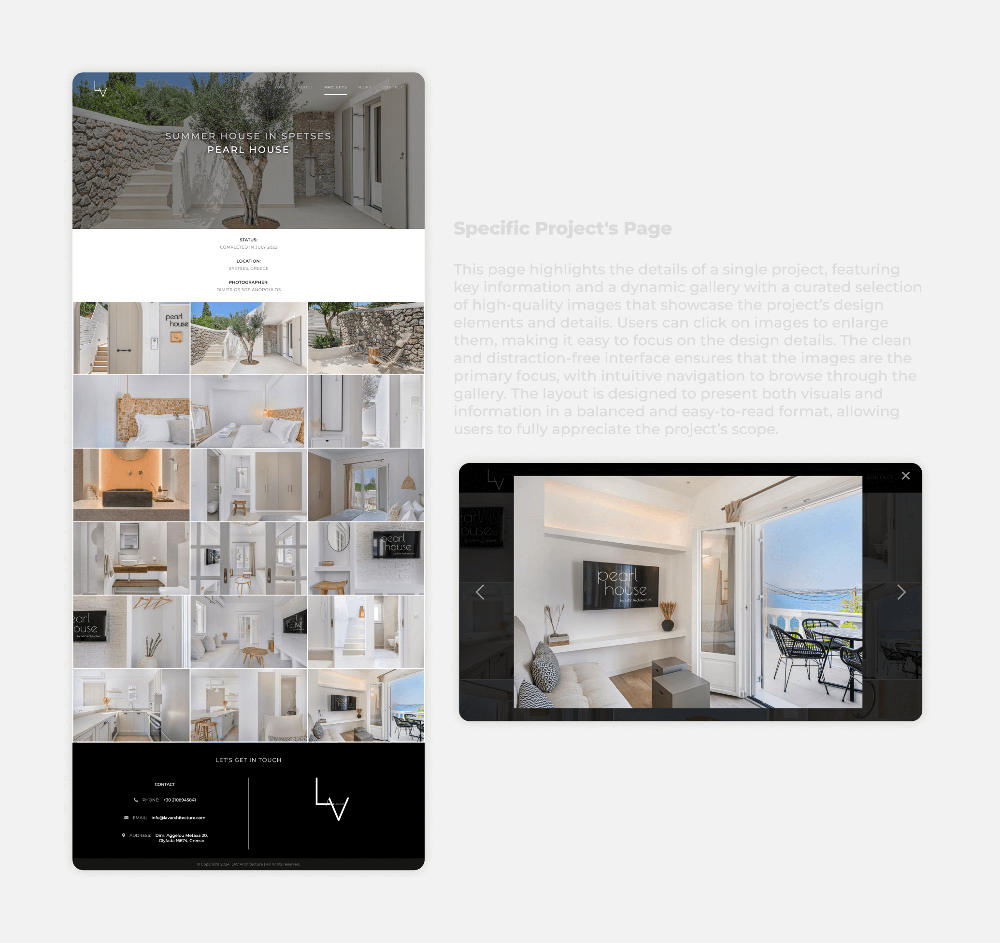

Visit the website: www.lavarchitecture.com
LAV is an architecture company and their website was designed and developed by me as a designer and front-end developer. The goal was to inform visitors and facilitate easy navigation to find interesting projects.The entire website was created from scratch using HTML, CSS, and JavaScript, allowing me to have complete control over the design and functionality.
Design and development of a website that will inform visitors about studio's work
January 2022 - June 2022 | 6 months
LAV Architecture
Individual Project
Figma, HTML, CSS, JS
Visit the website: www.lavarchitecture.com
After engaging in a thorough discussion with the architect, I gathered the necessary information and discussed their expectations, goals, and requirements for the website. This initial consultation allowed me to gain a comprehensive understanding of their vision, enabling me to commence the planning phase for the website's design.
The purpose of the website is to serve as a digital platform that showcases the studio's work, attracts potential customers, and provides essential information. It aims to create a strong online presence and act as a valuable marketing tool.

To create effective content, I thoroughly examined the architect's core audience. I identified their specific needs and created a persona that reflected their characteristics. This provided valuable insights into their preferences, allowing me to tailor the content and design choices accordingly.

Competitor analysis was integral in the creation of the website. Working closely with the client, we conducted a comprehensive analysis of competitors' websites before, during, and after the design phase. This process provided valuable insights into design trends, user experience practices, and industry standards.
By examining how competitors present themselves, we gained a clear understanding of their positioning. This knowledge empowered us to strategically position the website and services offered by LAV in a distinctive and captivating manner that resonates with the target audience.
After gathering all the required information, I proceeded to develop a sitemap. This visual represenation of the website enabled me to conceptualize the user's path, demonstrating how they can effortlessly navigate between pages. My objective was to guarantee an attractive and user-friendly website that delivers an intuitive browsing experience.
Considering that the website's visitors are individuals seeking architects to collaborate with, utmost attention was given to the design and aesthetics. The primary focus was to create a website that is user-friendly, ensuring a seamless and valuable experience for the visitors.
To align the website's aesthetics with the studio's identity and attract visitors, I actively engaged with the client. By reviewing their project images, I understood their preference for minimalistic designs blending modern and traditional elements, emphasizing quality. Using this insight, I created wireframes to present initial concepts. Upon approval, I refined them into mid-fidelity mockups, collaborating closely with the client to capture the desired aesthetic accurately. With approved mockups, I developed a minimalistic color palette and typography guide in line with the studio's identity. We agreed on text styles and imagery. To ensure client satisfaction, high-fidelity mockups were created using Figma. This meticulous process guarantees the website design reflects the studio's aesthetics and meets the client's vision before entering the development phase.


Collaboratively with the client, we finalized the mockups and refined the website's content. Subsequently, I embarked on building the website from scratch using HTML, CSS, and JavaScript, ensuring a custom and tailored solution.
I prioritised responsiveness during the website development process, ensuring that it seamlessly adapts to various screen sizes. This approach guarantees that users can enjoy an exceptional and intuitive browsing experience regardless of the device they use.
Before going live, I thoroughly tested the website to ensure everything was running smoothly. This involved checking all the links and buttons, verifying the spelling and accuracy of the content, and ensuring consistent visuals across different screen sizes.
This project provided an exciting opportunity to delve into design principles specific to architectural websites. It allowed me to explore captivating methods of highlighting the studio's unique aesthetics, style, and identity, effectively aligning their digital presence with their remarkable work. Moreover, a key aspect of the design process was carefully considering information hierarchy. Striking the right balance between the content users are consuming and the content they desire, I ensured a seamless user experience and optimized engagement with the website.
Let's have a talk so you can learn more about my work!
© Copyright Ioanna Lazaridou | All rights reserved.